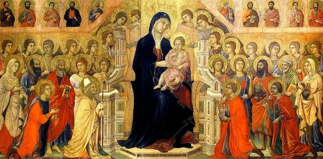

A arte medieval é aquela que foi produzida durante o período da Idade Média (século V ao XV). Está associada à religiosidade, uma vez que nesse período a Igreja tinha grande poder e influência na vida das pessoas. Assim, o teocentrismo (Deus como centro do mundo) foi a principal característica da cultura medieval.
A Idade Média teve início com a queda do Império romano do Ocidente, em 476. Seu fim foi marcado com a tomada de Constantinopla pelos turcos em 1453.
Na Idade Média (ou medievo), poucas pessoas sabiam ler. Essa atividade era exclusiva dos membros da Igreja (clero) e dos nobres.
Portanto, a arte religiosa da Idade Média tinha o intuito de aproximar as pessoas da religiosidade e apresentar um caráter didático.
A principal organização político-administrativa desse período estava baseada no sistema feudal. Nessas grandes extensões de terra, a mobilidade social era inexistente.
A sociedade feudal era exclusivamente rural e autossuficiente. A estrutura social era estamental e fixa, dividida em rei, clero, nobreza e povo.
Foi nesse contexto que a arte medieval se desenvolveu em diversos campos, como a arquitetura, pintura, música, escultura e literatura. Dois estilos foram predominantes nesse período: o Estilo Românico e o Estilo Gótico.
Leia mais...